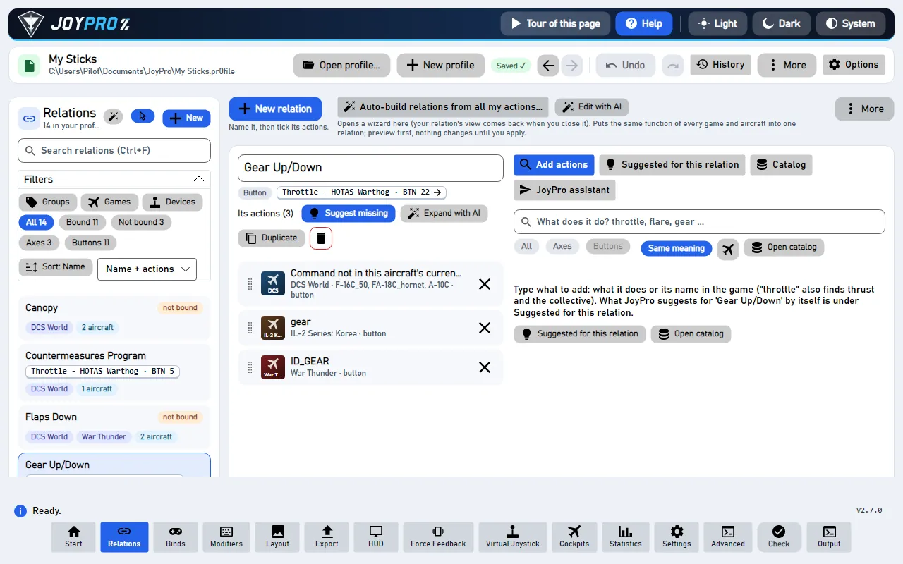

Μια σχέση είναι μία λειτουργία, για παράδειγμα «Gear Up/Down» ή «Throttle». Περιέχει την ενέργεια αυτής της λειτουργίας σε κάθε παιχνίδι και αεροσκάφος που πετάτε: DCS F-16C «Landing Gear Up/Down», IL-2 «Gear», War Thunder «Landing gear», Star Citizen «Toggle landing gear». Δίνετε στη σχέση ένα κουμπί ή έναν άξονα στη σελίδα Αντιστοιχίσεις (ή περισσότερα, για παράδειγμα το ίδιο κουμπί σε δύο stick), και τότε αυτό το κουμπί κάνει την ίδια λειτουργία παντού.
Είσοδος 1: Throttle κουμπί 22 (κράτημα Shift)
Είσοδος 2: Stick κουμπί 5
Κάθε παιχνίδι παίρνει τις ίδιες εισόδους για τη δική του ενέργεια. Η Εξαγωγή τις γράφει στα αρχεία χειριστηρίων κάθε παιχνιδιού, με πρώτα ένα αντίγραφο ασφαλείας. Ένα παιχνίδι που κρατά λιγότερες εισόδους ανά ενέργεια (το Elite Dangerous κρατά δύο κουμπιά, τα περισσότερα παιχνίδια έναν άξονα) παίρνει όσες κρατά, και η Εξαγωγή σας λέει ποια δεν χώρεσε.
| Παιχνίδι | Η ενέργειά της | Οι είσοδοί σας | Πού τη γράφει η Εξαγωγή |
|---|---|---|---|
| DCS (F-16C, F/A-18C, A-10C) | Landing Gear Up/Down | Throttle κουμπί 22 με Shift, Stick κουμπί 5 | Τα χειριστήρια κάθε αεροσκάφους στον φάκελο Saved Games του DCS |
| IL-2 Korea | Gear | το ίδιο | Το key mapping του IL-2 Korea |
| War Thunder | Landing gear | το ίδιο | Το αρχείο χειριστηρίων του War Thunder |
#Οι σχέσεις με απλά λόγια
Σκεφτείτε μια σχέση ως ετικέτα για μια δουλειά: «κατέβασε το σύστημα προσγείωσης». Κάθε παιχνίδι ονομάζει αυτή τη δουλειά αλλιώς και την αποθηκεύει με δικό του κωδικό. Η σχέση τα συγκεντρώνει όλα, ώστε να αποφασίζετε μία φορά ποιο κουμπί κάνει τη δουλειά.
- Σελίδα Σχέσεις: η λίστα των σχέσεών σας αριστερά, η ανοιχτή σχέση στη μέση, εργαλεία δεξιά.
- Σελίδα Αντιστοιχίσεις: σε ποιο κουμπί ή άξονα βρίσκεται κάθε σχέση. Μια σχέση μπορεί να βρίσκεται σε πολλά.
- Εξαγωγή: τη γράφει σε κάθε παιχνίδι.



#Φτιάξτε μία, βήμα προς βήμα
- Πατήστε Νέα σχέση (ή Ctrl+N) και πληκτρολογήστε ένα όνομα, για παράδειγμα
Gear. - Στο Προσθήκη ενεργειών, πληκτρολογήστε τι κάνει:
gear. Το JoyPro ψάχνει σε κάθε παιχνίδι και αεροσκάφος όσο πληκτρολογείτε και γνωρίζει άλλες λέξεις για το ίδιο πράγμα (τοthrottleβρίσκει επίσης την ώση και το collective του ελικοπτέρου, τοflareτον διακόπτη απελευθέρωσης αντιμέτρων). - Τα αποτελέσματα έρχονται ομαδοποιημένα ανά παιχνίδι. Το κύριο χειριστήριο κάθε παιχνιδιού για τη λειτουργία εμφανίζεται πρώτο. Τσεκάρετε ό,τι ταιριάζει.
- Πατήστε Δημιουργία σχέσης με n ενέργειες. Τέλος: ανοίξτε τη σελίδα Αντιστοιχίσεις και πατήστε το κουμπί που θέλετε για αυτήν.
#Αφήστε το JoyPro να το κάνει
- Το Προτεινόμενα για αυτή τη σχέση παραθέτει τι άλλο σημαίνει το ίδιο σε άλλα παιχνίδια και αεροσκάφη. Προσθήκη ενός ή Προσθήκη όλων.
- Το Αυτόματη δημιουργία σχέσεων από όλες τις ενέργειές μου... δημιουργεί σχέσεις για ολόκληρο το προφίλ: την ίδια λειτουργία κάθε αεροσκάφους και παιχνιδιού μαζί (Ανά λειτουργία, που λέγεται Αυτόματη ομαδοποίηση). Βλέπετε πρώτα μια προεπισκόπηση.
- Βοηθός JoyPro: πληκτρολογήστε μια πρόταση όπως «make a throttle relation for every game» και το κάνει. Το Αναίρεση αυτού αναιρεί ολόκληρη την απάντηση.
Κάθε αλλαγή μπορεί να αναιρεθεί με Ctrl+Z, και μετά από επανεκκίνηση.
#Εργασία με πολλές σχέσεις
- Φίλτρα πάνω από τη λίστα: ομάδες, παιχνίδια και τα αεροσκάφη τους, συσκευές, αντιστοιχισμένες ή όχι, άξονας ή κουμπί. Η αναζήτηση μπορεί να κοιτάζει μόνο ονόματα, ονόματα και ενέργειες, ή τα πάντα (απομνημονεύεται). Το Ctrl/Shift+κλικ επιλέγει πολλές σχέσεις για Μαζικές αλλαγές (ομάδες, αντιγραφή, διαγραφή).
- Η ανοιχτή σχέση: μετονομασία επί τόπου (Enter), το είδος της (Άξονας ή Κουμπί), η είσοδός της, το chip λειτουργίας (τι πιστεύει το JoyPro ότι είναι η σχέση, από τον κατάλογο λειτουργιών του), Πρόταση όσων λείπουν (n), Διπλότυπο (με ή χωρίς την αντιστοίχιση), διαγραφή. Από κάτω, Οι ενέργειές της: μία κάρτα ανά ενέργεια παιχνιδιού με το σήμα του παιχνιδιού, το αεροσκάφος, τον τίτλο. Σύρετε μια κάρτα από τη λαβή της για να αλλάξετε τη σειρά (ή Alt+Up / Alt+Down).
- Αεροσκάφη μιας ενέργειας (DCS): ένα κλικ σε μια ενέργεια ανοίγει τα αεροσκάφη της, «82 από 84 αεροσκάφη», το καθένα με ένα τικ. Το ίδιο id εντολής DCS μπορεί να σημαίνει κάτι άλλο σε άλλο αεροσκάφος (το
a2001cdnilείναι «Pitch» στα τζετ και «Cyclic Pitch» στα ελικόπτερα· ένα id διακόπτη πιλοτηρίου είναι τρεις διαφορετικοί διακόπτες σε τρία warbirds): το JoyPro προσθέτει μόνο αεροσκάφη όπου το id σημαίνει το ίδιο και επισημαίνει τα άλλα. - Οι προτάσεις προέρχονται από τέσσερις πηγές, χωρίς καμία AI: τον κατάλογο λειτουργιών (ελεγμένο με τα εγχειρίδια), το δικό σας στυλ (τι βάζετε σε αυτή τη λειτουργία σε άλλα αεροσκάφη), το ίδιο id DCS όπου σημαίνει το ίδιο, και παρόμοιους τίτλους σε οποιοδήποτε παιχνίδι (ποτέ την αντίθετη κατεύθυνση). Υψηλή από 85 πόντους, μέτρια από 55· οι αδύναμες μόνο κατόπιν αιτήματος. Το x απορρίπτει μια πρόταση οριστικά (μένει στη σχέση απενεργοποιημένη, ώστε να μην επιστρέψει ποτέ).
- Ήδη σε άλλη σχέση: μια γραμμή λέει «Ήδη στο 'Flare'» και προσφέρει Μετακίνηση εδώ.
- Κατάλογος: κάθε ενέργεια ενός παιχνιδιού ή αεροσκάφους ανά κατηγορίες, για περιήγηση αντί για αναζήτηση.
- Η Αυτόματη ομαδοποίηση λειτουργεί για DCS, Falcon BMS, IL-2 Great Battles και Korea, Star Citizen, X4, Elite Dangerous, MSFS 2020 και 2024, X-Plane 11 και 12, War Thunder, Arma 3, Arma Reforger και WARDOGS. Η Ομαδοποίηση με περιγραφή ομαδοποιεί μόνο ό,τι ονομάζει μια πρόταση («all radio and comms functions of the F-16 and the A-10»).
#Πολλές είσοδοι για μία σχέση
Μια σχέση μπορεί να βρίσκεται σε περισσότερες από μία εισόδους: η ίδια λειτουργία σε δύο sticks, ή ένα δεύτερο κουμπί βολής. Κάθε είσοδος έχει δική της συσκευή, τροποποιητές και καμπύλη άξονα. Η είσοδος 1 είναι η κύρια είσοδος.
- Προσθήκη μίας: σελίδα Αντιστοιχίσεις, η σχέση, Περισσότερες είσοδοι > Καταγραφή άλλης εισόδου (ή Προσθήκη της εισόδου που επιλέχθηκε χειροκίνητα). Το Ορισμός ως κύρια την ανταλλάσσει με την κύρια είσοδο· η Αφαίρεση την αφαιρεί.
- Μία καμπύλη ανά είσοδο: για έναν άξονα σε δύο συσκευές, η Απόκριση άξονα έχει μια λίστα Είσοδος στην κορυφή.
- Μια ολόκληρη συσκευή: η Αντιγραφή κάθε αντιστοίχισης μιας συσκευής σε άλλη συσκευή δίνει σε κάθε αντιστοίχιση της πρώτης συσκευής την αντίστοιχη είσοδο της δεύτερης (η ίδια λαβή σε δύο βάσεις).
- Εύρεση από οποιαδήποτε είσοδο: η Παρακολούθηση εισόδου, η σελίδα Διάταξη, το φίλτρο Συσκευές και η αναζήτηση με Τα πάντα βρίσκουν μια σχέση και από τη δεύτερη είσοδό της.
- Στα παιχνίδια: όπου ένα παιχνίδι κρατά πολλές εισόδους ανά ενέργεια, η Εξαγωγή τις γράφει όλες, πρώτα την κύρια. Όπου κρατά μία, γράφει την κύρια είσοδο και αναφέρει τις υπόλοιπες.
#Πολλές ενέργειες ταυτόχρονα
Στην ανοιχτή σχέση, Ctrl+κλικ ή Shift+κλικ σε κάρτες ενεργειών· το Ctrl+A τις επιλέγει όλες. Η γραμμή «n ενέργειες επιλεγμένες» προσφέρει:
| Κουμπί | Τι κάνει |
|---|---|
| Αντιγραφή (Ctrl+C) | Μετά ανοίξτε μια άλλη σχέση του ίδιου είδους και πατήστε Επικόλληση (Ctrl+V). Οι ενέργειες έρχονται με τα αεροσκάφη τους, και τις απενεργοποιημένες. |
| Μετακίνηση σε... | Νέα σχέση (πληκτρολογήστε ένα όνομα· ίδιο είδος με την παλιά) ή Υπάρχουσα σχέση, επιλεγμένη από μια λίστα με αναζήτηση. Εμφανίζονται μόνο σχέσεις του ίδιου είδους. |
| Αφαίρεση (Del) | Τις αφαιρεί μετά από μία ερώτηση. |
Το μενού δεξιού κλικ μιας ενέργειας έχει επίσης Αντιγραφή και Μετακίνηση σε άλλη σχέση.... Στη λίστα σχέσεων, επιλέξτε πολλές σχέσεις (Ctrl/Shift+κλικ) και πατήστε Μετακίνηση ενεργειών σε...: όλες οι ενέργειές τους πηγαίνουν σε μία σχέση, νέα ή υπάρχουσα, και οι σχέσεις που άδειασαν διαγράφονται. Καθένα από αυτά είναι ένα βήμα: ένα Ctrl+Z το αναιρεί. Περισσότερα: Πολλά κουμπιά για μία λειτουργία.
#Τι ελέγχει ο Έλεγχος
Δύο σχέσεις με την ίδια είσοδο που έχουν και οι δύο ενεργή μια ενέργεια του ίδιου αεροσκάφους σημαίνουν ότι ένα κουμπί κάνει δύο πράγματα εκεί· μια ενέργεια ενεργή σε δύο σχέσεις σημαίνει ότι το παιχνίδι τη λαμβάνει σε δύο κουμπιά. Ο Έλεγχος τα αναφέρει και τα δύο με διορθώσεις ενός κλικ.
Μια σχέση από μόνη της δεν αλλάζει τίποτα σε ένα παιχνίδι. Στην επόμενη εξαγωγή κάθε ενέργεια της σχέσης παίρνει τις εισόδους της σχέσης, σε κάθε παιχνίδι και αεροσκάφος όπου η ενέργεια είναι ενεργή:
- DCS: σε κάθε τσεκαρισμένο αεροσκάφος η εντολή παίρνει το κουμπί (με τον τροποποιητή, όταν η αντιστοίχιση έχει). Ένα αεροσκάφος που είναι ανενεργό στην ενέργεια κρατά ό,τι είχε (ή τίποτα, με Αντικατάσταση).
- IL-2, BMS, X-Plane, MSFS, War Thunder ...: μία ενέργεια ανά παιχνίδι· παίρνει το κουμπί.
- Star Citizen και παιχνίδια με πεζικό: μόνο η ενέργεια του σκάφους ή του αεροσκάφους παίρνει το κουμπί· οι αντιστοιχίσεις για πεζό μένουν.
- Οι σχέσεις αξόνων μεταφέρουν την καμπύλη, τη νεκρή ζώνη, τον κορεσμό, την αντιστροφή και το slider της αντιστοίχισης, γραμμένα στο μοντέλο απόκρισης κάθε παιχνιδιού (DCS curvature, IL-2 response, MSFS sensitivity, X-Plane response curve ...).
Έτσι, μετά από μία εξαγωγή, το «Throttle · BTN 22» κατεβάζει το σύστημα προσγείωσης στο F-16, στο F/A-18, στο A-10C, στο IL-2 Korea και στο War Thunder, και ο παίκτης βρίσκει τον ίδιο διακόπτη για την ίδια δουλειά σε κάθε πιλοτήριο.
#Πώς λειτουργεί εσωτερικά
- Μοντέλο δεδομένων (
engine\CoreRelation.cs,CoreProfile.cs): ένα.pr0fileπεριέχει αντικείμεναRelation· το καθένα έχει όνομα, ομάδες,IsAxis, μια λίστα απόRelationItem(παιχνίδι, id, αεροσκάφη με κατάσταση ενεργό/ανενεργό, σειρά) και έναBind(συσκευή, είσοδος, τροποποιητές, ρυθμίσεις άξονα ανά εμβέλεια). Οι τροποποιητές είναι ξεχωριστά αντικείμενα με αναφορά μέσω ονόματος. Το προφίλ αποθηκεύεται ατομικά και με εκδόσεις (ProfileHistory.cs). - Αναζήτηση (
engine relations search): ένα ευρετήριο πάνω στη λίστα εντολών κάθε παιχνιδιού (DB\<game>στον φάκελο δεδομένων παιχνιδιών), τον κατάλογο λειτουργιώνDB\Functions(λειτουργίες, συνώνυμα, όροι παιχνιδιών, ελεγμένα με εγχειρίδια) και τις σημασίες ανά id (EngineIdMeanings.cs: ίδιο / κοντινό / διαφορετικό ανά αεροσκάφος DCS). Το GUI την εκτελεί 300 ms μετά το τελευταίο πλήκτρο· οι γρήγορες εντολές πηγαίνουν σε ένα μακροχρόνια ενεργόengine serve(τον διακομιστή της μηχανής) αντί για νέα διεργασία κάθε φορά. - Αλλαγές:
relations add <name> --axis|--button --node Game:Id:Plane1|Plane2,relations suggest apply <relation> --add ... | --take | --never | --remove,relations rename,relations item move,relations aircraft set. Η καθεμία είναι μία εντολή της μηχανής, άρα ένα βήμα αναίρεσης. - Προτάσεις:
relations suggest <relation> [--min high|medium|low](βαθμολογίες όπως παραπάνω)·relations suggest --all --missingγια όλες τις σχέσεις μαζί. - Αυτόματη ομαδοποίηση: ντετερμινιστικοί κανόνες μαζί με το στυλ που έμαθε (τουλάχιστον δύο ξεχωριστές αποφάσεις στις δικές σας σχέσεις)· προεπισκόπηση, μετά εφαρμογή. Το προαιρετικό τοπικό μοντέλο AI απλώς καλεί τα ίδια εργαλεία· χωρίς αυτό απαντούν οι κανόνες εκτός σύνδεσης.
Τι συμβαίνει όταν κάνετε αναζήτηση, δημιουργείτε μια σχέση και παίρνετε προτάσεις. Η σελίδα Σχέσεις ρωτά τον διακομιστή της μηχανής:
| # | Ποιος | Τι συμβαίνει |
|---|---|---|
| 1 | Εσείς | Πληκτρολογήστε «gear» στην αναζήτηση. |
| 2 | Διακομιστής μηχανής | Το relations search "gear" --limit 200 --per-game 12 απαντά με γραμμές ανά παιχνίδι, πρώτα το κύριο χειριστήριο, και γιατί βρέθηκε η καθεμία. |
| 3 | Εσείς | Τσεκάρετε γραμμές και πατήστε Δημιουργία σχέσης. |
| 4 | Διακομιστής μηχανής | Το relations add "Gear" --button --node DCS:d68...:F-16C_50\|FA-18C_hornet --node WarThunder:ID_GEAR:WarThunder αποθηκεύει το προφίλ με μια έκδοση στο ιστορικό. |
| 5 | Διακομιστής μηχανής | Το relations suggest "Gear" απαντά με προτάσεις, τις βαθμολογίες τους και τους λόγους. |
Εντολές μηχανής: engine relations search, engine relations add, engine relations suggest, engine relations browse, engine relations assistant, engine relations auto-group, engine relations from-text. Τεκμηρίωση: Αναφορά της σελίδας Σχέσεις, Αυτόματη ομαδοποίηση, Ομαδοποίηση με περιγραφή, Πρόταση προσθηκών.
#Σχετικά
- Η σελίδα Σχέσεις, κάθε στοιχείο της
- Η σελίδα Αντιστοιχίσεις: δώστε στη σχέση το κουμπί της
- Τροποποιητές: ένα κουμπί αλλάζει τι κάνουν τα άλλα